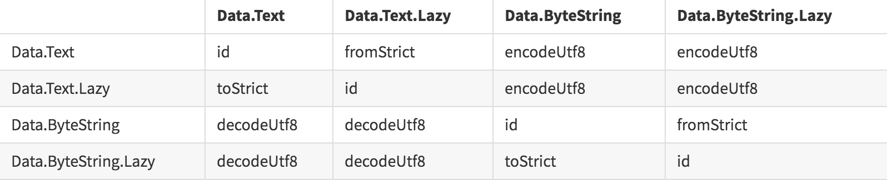

String
默认的字符串类型已损坏，应尽可能避免使用。 不幸的是，由于历史原因，GHC和Base的大部分都依赖于String。
默认的Haskell字符串类型被实现为一个天真的字符链接列表，这在大多数情况下都是很糟糕的，但是没有人知道如何修复它，而不重写存在的所有代码的大部分，没有人能确定时间来修复它。所以它仍然破碎，很可能永远破碎。
1 | type String = [Char] |
对于性能更敏感的情况，有两个用于处理文本数据的库：text和bytestring。
- text 用于处理
Unicode数据。 - bytestring 用于处理需要与
C代码或网络协议互换的ASCII数据。
对于这两种格式，text和bytestring都有两个变体。
- lazy 惰性文本对象被编码为严格字节
chunks(块)的惰性列表。 - lazy 字节向量被编码为字节或代码点的严格
Word8数组.
产生了四种类型:1
2
3
4
5
6Variant Module
-----------------------------------------
strict text Data.Text
lazy text Data.Text.Lazy
strict bytestring Data.ByteString
lazy bytestring Data.ByteString.Lazy
Conversions(转换)
字符串类型之间的转换是通过bytestring和text库中的几个函数完成的。text和bytestring之间的映射本质上是有损的，因此在选择编码时有一定的自由度。为了简单起见，我们只考虑使用utf-8。

Overloaded Strings
使用-XOverloadedStrings扩展名，可以在不需要显式打包的情况下重载字符串文字，并且可以在Haskell源代码中将其作为字符串文字编写，并通过类型类IsString重载。 有时这是可取的。
1 | class IsString a where |
例如:1
2
3
4
5
6
7λ: :type "foo"
"foo" :: [Char]
λ: :set -XOverloadedStrings
λ: :type "foo"
"foo" :: IsString a => a
我们还可以使用generalizednewtypedering为newtypes派生IsString，尽管如果newtype可以与其他字符串互换，那么它的许多安全性就会丢失。
1 | newtype Cat = Cat Text |
Import Conventions
1 | import qualified Data.Text as T |
Text
文本类型是一堆Unicode字符。1
2
3
4
5
6
7
8
9
10
11
12
13pack :: String -> Text
unpack :: Text -> String
import qualified Data.Text as T
-- From pack
myTStr1 :: T.Text
myTStr1 = T.pack ("foo" :: String)
-- From overloaded string literal.
myTStr2 :: T.Text
myTStr2 = "bar"
請看:
Text.Builder
1 | toLazyText :: Builder -> Data.Text.Lazy.Internal.Text |
Text.Builder允许对惰性文本类型进行高效的monoidal(单项的)构造，而不必通过诸如String或List类型之类的低效率形式作为中介。1
2
3
4
5
6
7
8
9
10
11
12
13
14
15
16
import Data.Monoid (mconcat, (<>))
import Data.Text.Lazy.Builder (Builder, toLazyText)
import Data.Text.Lazy.Builder.Int (decimal)
import qualified Data.Text.Lazy.IO as L
beer :: Int -> Builder
beer n = decimal n <> " bottles of beer on the wall.\n"
wall :: Builder
wall = mconcat $ fmap beer [1..1000]
main :: IO ()
main = L.putStrLn $ toLazyText wall
ByteString
ByteStrings是未装箱的字符数组，具有strict(严格)或lazy(延迟)的求值.1
2
3
4
5
6
7
8
9
10
11
12
13
14pack :: String -> ByteString
unpack :: ByteString -> String
import qualified Data.ByteString as S
import qualified Data.ByteString.Char8 as S8
-- From pack
bstr1 :: S.ByteString
bstr1 = S.pack ("foo" :: String)
-- From overloaded string literal.
bstr2 :: S.ByteString
bstr2 = "bar"
請看:
utf8-string
TODO
請看:
base64-bytestring
TODO
請看:
Printf
Haskell还具有C风格的可变参数printf函数。1
2
3
4
5
6
7
8
9
10
11
12
13
14
15import Data.Text
import Text.Printf
a :: Int
a = 3
b :: Double
b = 3.14159
c :: String
c = "haskell"
example :: String
example = printf "(%i, %f, %s)" a b c
-- "(3, 3.14159, haskell)"
Overloaded Lists
数据结构库公开toList和fromList函数以从列表中构造各种结构是普遍存在的。从GHC 7.8开始，我们现在可以使用类型类IsList重载surface(表面)语言中的list语法。1
2
3
4
5
6
7
8
9
10
11
12
13
14
15
16
17
18
19
20
21
22
23
24
25
26class IsList l where
type Item l
fromList :: [Item l] -> l
fromListN :: Int -> [Item l] -> l
toList :: l -> [Item l]
instance IsList [a] where
type Item [a] = a
fromList = id
toList = id
λ: :seti -XOverloadedLists
λ: :type [1,2,3]
[1,2,3] :: (Num (GHC.Exts.Item l), GHC.Exts.IsList l) => l
import qualified Data.Map as Map
import GHC.Exts (IsList(..))
instance (Ord k) => IsList (Map.Map k v) where
type Item (Map.Map k v) = (k,v)
fromList = Map.fromList
toList = Map.toList
example1 :: Map.Map String Int
example1 = [("a", 1), ("b", 2)]
String Conversions
玩type-tetris来显式地在字符串之间转换可能会令人沮丧，幸运的是有几个包使用类型类自动转换，从而在任意两个常用字符串表示之间自动转换。然后我们可以编写泛型comparison(比较)和concatenation(连接)运算符，自动将操作数类型转换为类似的形式。1
2
3
4
5
6
7
8
9
10
11
12
13
14
15
16
17
18
19
20
21
22
23
24
25
26
27
28
29
30
31
32
33
34
35
36
37
38
39
40
import Data.String.Conv
import qualified Data.Text as T
import qualified Data.Text.Lazy.IO as TL
import qualified Data.ByteString as B
import qualified Data.ByteString.Lazy as BL
import Data.Monoid
a :: String
a = "Gödel"
b :: BL.ByteString
b = "Einstein"
c :: T.Text
c = "Feynmann"
d :: B.ByteString
d = "Schrödinger"
-- Compare unlike strings
(==~) :: (Eq a, StringConv b a) => a -> b -> Bool
(==~) a b = a == toS b
-- Concat unlike strings
(<>~) :: (Monoid a, StringConv b a) => a -> b -> a
(<>~) a b = a <> toS b
main :: IO ()
main = do
putStrLn (toS a)
TL.putStrLn (toS b)
print (a ==~ b)
print (c ==~ d)
print (c ==~ c)
print (b <>~ c)